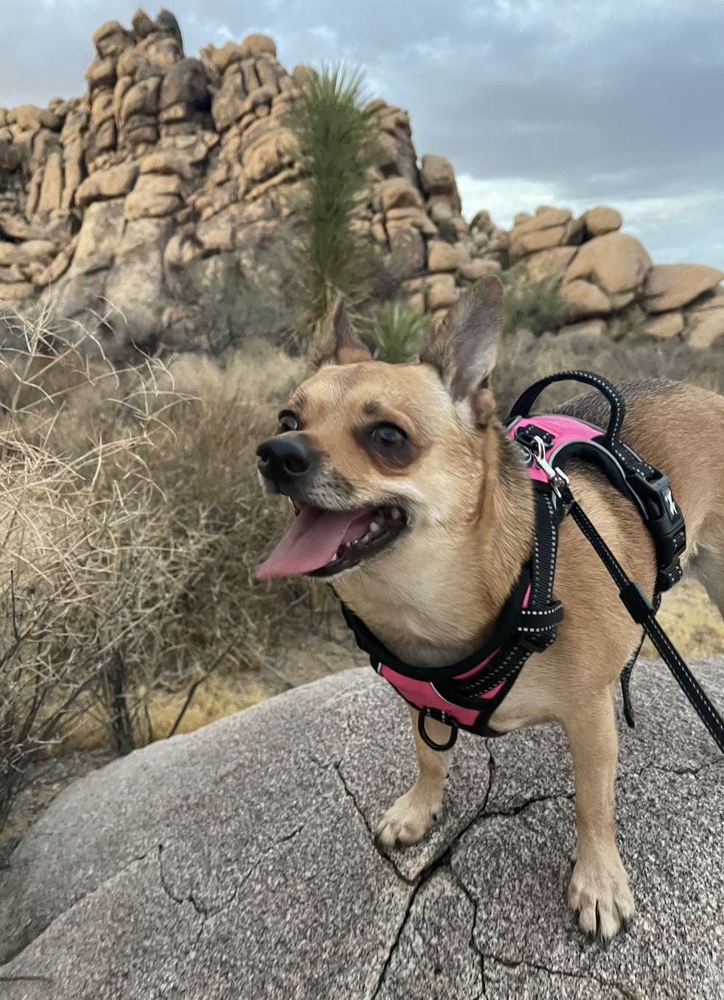

Student, Media Studies Major
I recently started getting into hiking. It is a nice way to relax, get fresh air, and spend time in nature. Walking through trails and seeing different views always makes me feel calm and refreshed. One of my favorite things is bringing my dog, Polly, with me. She is a Chihuahua mix and loves being outside. Even though she is small, she has a lot of energy and enjoys exploring the trail. Hiking with Polly makes the experience even more fun and rewarding.
